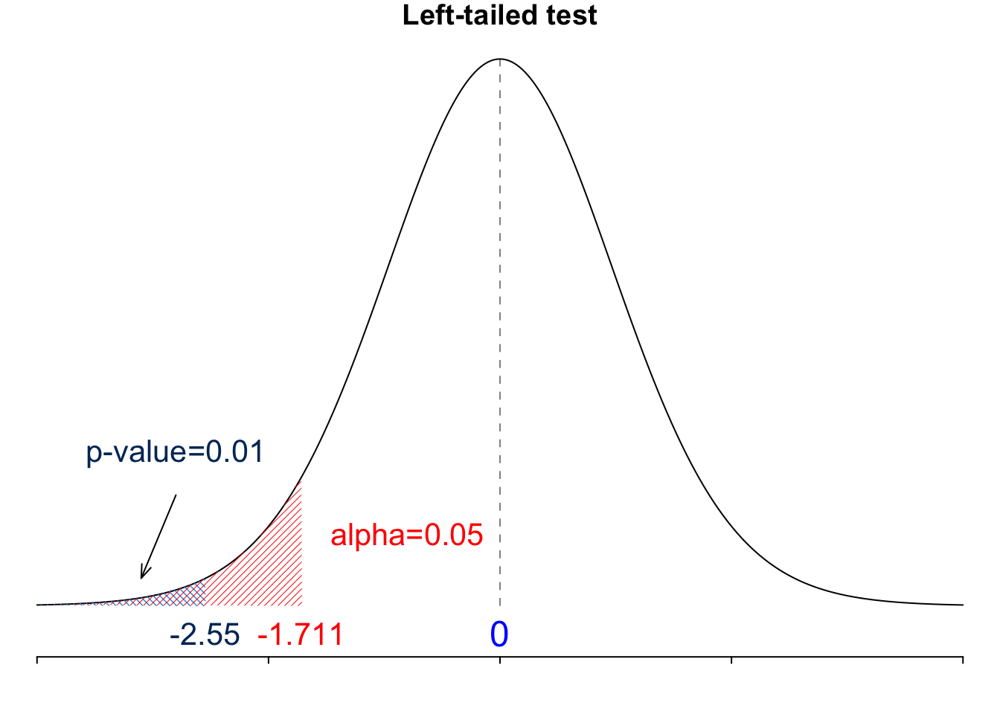
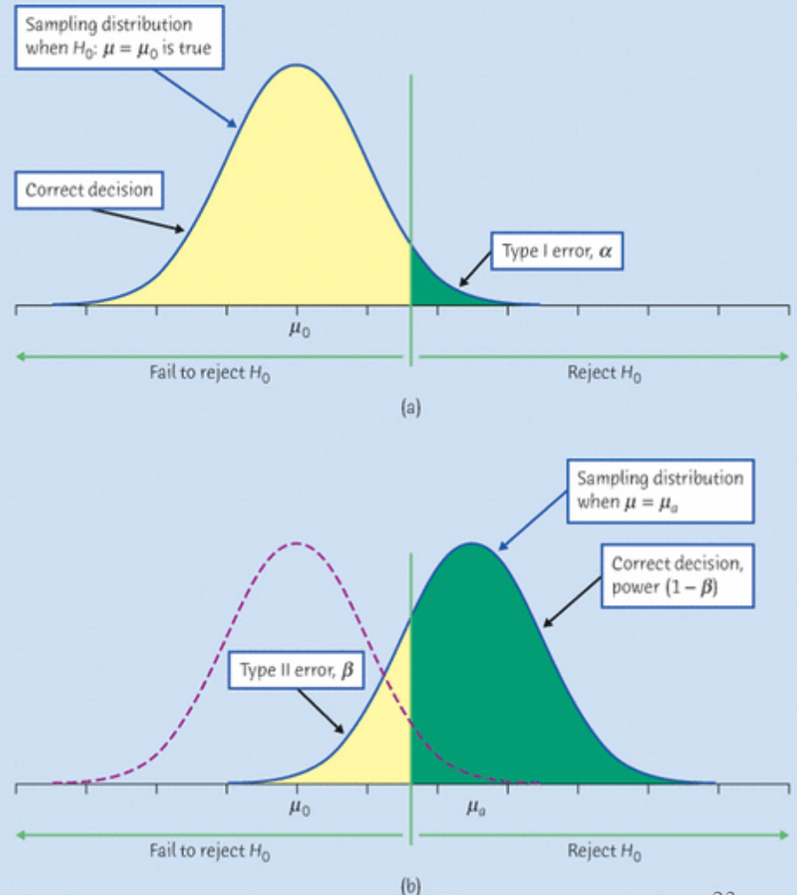
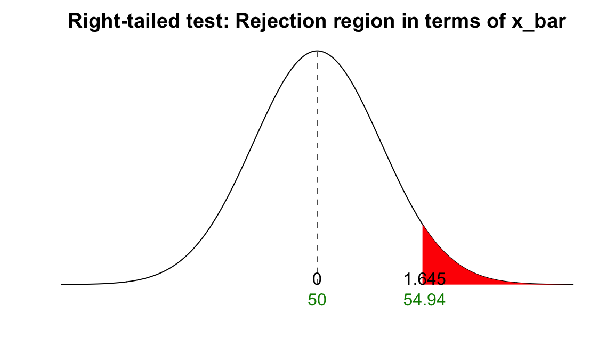
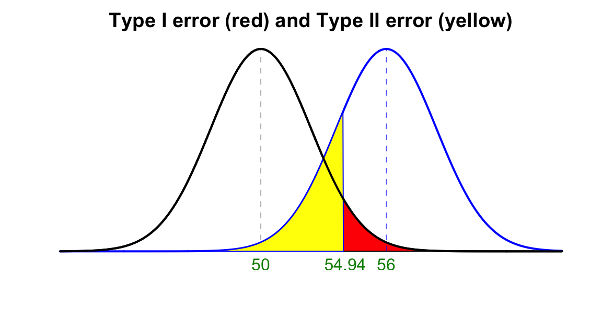
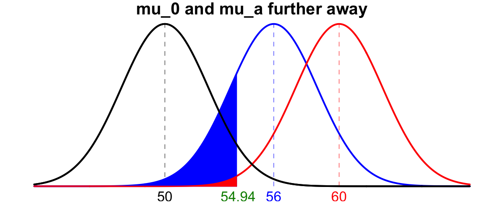
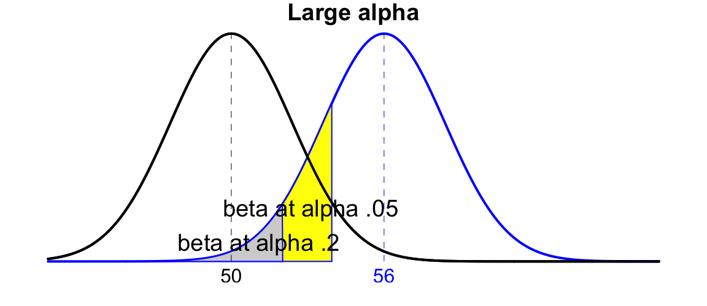
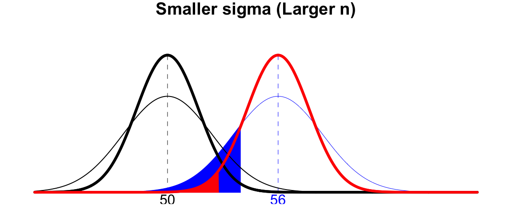

16 Hypothesis Testing
We finished the discussion of estimation, interval estimation in particular in the previous chapter. The other part of statistical inference is hypothesis testing. In this chapter, we first discuss the meaning a hypothesis in statistical analysis, followed by the testing procedures for population mean \(\mu\) when \(\sigma\) is known and when \(\sigma\) is unknown. Pay attention to similarity and difference of estimation and testing.
16.1 Introduction
What is Hypothesis Testing?
In statistics, a hypothesis is a claim or statement about a property of a population, often the value of a population distribution parameter. For example,
The mean body temperature of humans is less than \(98.6^{\circ}\) F. Here the mean body temperature is a property or characteristic of target population human beings. We can turn the verbal claim into a brief mathematical expression \(\mu < 98.6\).
Marquette students’ IQ scores has standard deviation equal to 15. The IQ score standard deviation is a characteristic of the population Marquette students. Mathematically, we can write the claim as \(\sigma = 15\).
You can see that we usually focus on claims about a population distribution parameter.
The null hypothesis, denoted \(H_0\), is a statement that the value of a parameter is equal to some claim value, or the negation of the alternative hypothesis that will be discussed in a minute. Often \(H_0\) represents a skeptical perspective or a claim to be tested, or the current status of the parameter. For example, the claim “the percentage of Marquette female students loving Japanese food is equal to 80%” is a \(H_0\) claim because of the key word “equal”. Usually we are not very convinced that the \(H_0\) claim is true, and in our analysis we want to test the claim, and see whether the evidence and information we collect is strong enough to make a conclusion that the percentage is not equal to 80%.
The alternative hypothesis, denoted \(H_1\) or \(H_a\), is a claim that the parameter is less than, greater than or not equal to some value. It is usually our research hypothesis of some new scientific theory or finding. If we think the percentage of Marquette female students loving Japanese food is greater than 80%, this hypothesis is the \(H_1\) claim. If after a formal testing procedure, we conclude that the percentage is greater than 80%, we sort of make a new research discovery that overturns the previous claim or status quo that the percentage is equal to 80%.
Let’s do one more exercise. Is the statement “On average, Marquette students consume less than 3 drinks per week.” a \(H_0\) or \(H_1\) claim? Because of the key word “less than”, it is a \(H_1\) claim.
So what is hypothesis testing? Hypothesis testing 1 is a procedure to decide whether or not to reject \(H_0\) based on how much evidence there is against \(H_0\). If the evidence is strong enough, we reject \(H_0\) in favor of \(H_1\).
Example
Before we jump into the formal hypothesis testing procedure, let’s talk about a criminal charge example. How a criminal is convicted is similar to the formal testing procedure.
Suppose a person is charged with a crime, and a jury will decide whether the person is guilty or not. We all know the rule: Even though the person is charged with the crime, at the beginning of the trial, the accuse is assumed to be innocent until the jury declares otherwise. Only if overwhelming evidence of the person’s guilt can be shown is the jury expected to declare the person guilty, otherwise the person is considered not guilty.
If we want to make a claim about whether the person is guilty or not, what are our \(H_0\) and \(H_1\)? Remember that the null hypothesis represents a skeptical perspective or a claim to be tested, or the current status of the parameter, so we have
- \(H_0:\) The person is not guilty 🙂
This is how we write a hypothesis: start with \(H_0:\) followed by the statement. Being not guilty is the default status quo of anyone, although the jury may doubt or be skeptical of the person being not guilty. The prosecutors and police detectives are trying their best the collect enough strong evidence to proof beyond a reasonable doubt to the jury. Therefore the alternative hypothesis is
- \(H_1:\) The person is guilty 😟
In the example, the evidence could be photos, videos, witnesses, fingerprints, DNA, and so on . How do we decide to keep \(H_0\) or to accept \(H_1\)? After all evidence including defense attorney and prosecutor’s arguments are presented to the jury, the decision rule is the jury’s voting . Finally, to close the case, we need a conclusion that is the verdict “guilty” or “Not enough evidence to convict” .
Please go through the entire criminal charge process again:
\(H_0\) and \(H_a\) => Evidence => Decision rule => Conclusion
The process is quite similar to the formal procedure for a hypothesis testing.
16.2 How to Formally Do a Statistical Hypothesis Testing
The entire hypothesis testing can be wrapped up in the following six steps. No worries if you don’t have any idea of it. We will learn this step by step using a test for the population mean \(\mu\).
Step 0: Check Method Assumptions
Step 1: Set the \(H_0\) and \(H_a\) in Symbolic Form from a Claim
Step 2: Set the Significance Level \(\alpha\)
Step 3: Calculate the Test Statistic (Evidence)
Decision Rule I: Critical Value Method
Step 4-c: Find the Critical Value
Step 5-c: Draw a Conclusion Using Critical Value Method
Decision Rule II: P-Value Method
Step 4-p: Find the P-Value
Step 5-p: Draw a Conclusion Using P-Value Method
- Step 6: Restate the Conclusion in Nontechnical Terms, and Address the Original Claim
Let’s look at this example: Is the New Treatment Effective?
A population of patients with hypertension is normal and has mean blood pressure (BP) of 150. After 6 months of treatment, the BP of 25 patients from this population was recorded. The sample mean BP is \(\overline{x} = 147.2\) and the sample standard deviation is \(s = 5.5\).

Our goal is to determine whether a new treatment is effective in reducing BP. Let’s learn the testing procedure step by step using this example.
Step 0: Check Method Assumptions
Any statistical method is based on some assumptions. To use the method, and analyze our data appropriately, we have to make sure that the assumptions are satisfied. In this book, most of the distribution-based methods require
Random sample
The population is normally distributed and/or the sample size \(n > 30\).

Example Step 0: Check Method Assumptions
- From the question description, A population of hypertension group is normal .
Step 1: Set the \(H_0\) and \(H_1\) from a Claim
The first step of testing is to understand the \(H_0\) and \(H_1\) claims, and express them using mathematically using population parameters. The followings provdie three examples.
- 🧑🏫 The mean IQ score of statistics professors is higher than 120.
- \(\begin{align}&H_0: \mu \le 120 \\ &H_1: \mu > 120 \end{align}\)
- 💵 The mean starting salary for Marquette graduates who didn’t take MATH 4720 is less than $60,000.
- \(\begin{align} &H_0: \mu \ge 60000 \\ &H_1: \mu < 60000 \end{align}\)
- 📺 The mean time between uses of a TV remote control by males during commercials equals 5 sec.
- \(\begin{align} &H_0: \mu = 5 \\ &H_1: \mu \ne 5 \end{align}\)
Keep in mind that the equality sign is always put in \(H_0\), and \(H_0\) and \(H_1\) are mutually exclusive. Also, the claims are for population parameters, not sample statistics. We are not sure the value of the parameter being tested, but we want to collect evidence, and see which claim about the parameter is supported by the evidence.
Example Step 1: Set the \(H_0\) and \(H_1\) from a Claim
The claim that the new treatment is effective in reducing BP means the mean BP is less than 150, which is an \(H_1\) claim. So we can write our \(H_0\) and \(H_1\) as
\(\small \begin{align} &H_0: \mu = 150 \\ &H_1: \mu < 150 \end{align}\)
where \(\mu\) is the mean blood pressure.
Step 2: Set the Significance Level \(\alpha\)
Next, we set the significance level \(\alpha\) that determines how rare or unlikely our evidence must be in order to represent sufficient evidence against \(H_0\). It tells us how strong the collected evidence must be in order to overturn the current claim. An \(\alpha\) level of 0.05 implies that evidence occurring with probability lower than 5% will be considered sufficient evidence to reject \(H_0\). Mathematically, \[\alpha = P(\text{Reject } H_0 \mid H_0 \text{ is true})\] As a result, \(\alpha = 0.05\) means that we incorrectly reject \(H_0\) 5 out of every 100 times we collect a sample and run the test.
Here is the idea. When we want to see if what we care about (the population parameter) is not as described as in the null hypothesis \(H_0\), we first assume or believe \(H_0\) is right, then based on this, we see if there is sufficient and strong evidence to conclude that it is probably not the case, and find the alternative hypothesis more reasonable.
Let’s explain \(\alpha\) by an example. Suppose we would like to test the claim that “The mean IQ of statistics professors is greater than 120.” Or in short \(H_0: \mu = 120\) vs. \(H_1: \mu > 120\). With large sample size, we can assume \(\overline{X}\) follows a normal distribution. Now, to test whether the mean IQ is greater than 120, we need to first treat the mean not being greater than 120 unless later we have sufficient evidence to say it is greater than 120. In particular, we need to do the test and analysis on the basis that the mean is under \(H_0\). That is, we first assume the mean is 120, or \(\mu = 120\), then see if the assumption really makes sense.
Because \(\overline{X}\) is normal, we do the test under the assumption that \(\overline{X} \sim N(120, \sigma^2)\) for some \(\sigma^2\), say \(9\). (Let’s focus on \(\mu\) and ignore \(\sigma\) at this moment). If \(\overline{X}\) has mean 120, and from our sample data we got the sample mean \(\overline{x} = 121\), do you think the claim \(H_0: \mu = 120\) make sense? How about you got \(\overline{x} = 127\)? Now \(\alpha\) comes into play. Let me ask you a question. What is the threshold or value of the sample mean \(\overline{x}\) that you think it is too large to believe that \(H_0: \mu = 120\) is a reasonable assumption or data generating mechanism? What is the threshold that makes you start to believe that \(H_1: \mu > 120\) makes more sense than \(H_0: \mu = 120\)? The significance level \(\alpha\) is such threshold value. With \(\alpha\) being specified, we know what is the corresponding sample mean threshold \(\overline{x}^*\), which is the one such that \(P(\overline{X} > \overline{x}^*) = \alpha\).
Figure 16.1 illustrates the significance level \(\alpha\). Once we decide \(\alpha\), we determines how rare or unlikely our sample mean \(\overline{x}\) must be in order to represent sufficient evidence against \(H_0: \mu = 120\). In this example, if our \(\overline{x}\) is greater than 125, we would think the evidence is strong enough to conclude that \(\mu = 120\) is not so reasonable because the chance of such value happening is no larger than \(\alpha\). We instead think \(H_1: \mu > 120\) makes more sense.

The entire rationale is the rare event rule.
The level \(\alpha\) is related to the \(\alpha\) used in confidence intervals for defining a “critical value”.
Example Step 2: Set the Significance Level \(\alpha\)
There is no \(\alpha\) mentioned in the question description. Usually \(\alpha\) is set by researchers themselves. Let’s set \(\alpha= 0.05\). This means we are asking, “Is there a sufficient evidence at \(\alpha= 0.05\) that the new treatment is effective?”
Step 3: Calculate the Test Statistic
Setting \(\alpha\) is kind of setting the threshold for determining whether our collected evidence is sufficient or strong enough or not. In this step, we are collecting our evidence. The evidence is collected from the information we have, which is the sample data. Sample data is the only source we have for the inference about the unknown parameter. So to do a test about the parameter, or decide whether a statement about the parameter makes sense, we let the data and evidence speak up.
The evidence used in the hypothesis testing is called test statistic: a sample statistic value used in making a decision about the \(H_0\). Suppose the test we are interested is \(H_0: \mu = \mu_0\) and \(\quad H_1: \mu < \mu_0\) where \(\mu_0\) is some population mean value that could be 150 lbs, 175 cm, 50 ounces, etc. When computing a test statistic, we assume \(H_0\) is true. Remember, we are trying to see if there is any strong evidence that is against \(H_0\). We should do our analysis in the world of \(H_0\) or the status quo. If the evidence is not sufficient, we stay in our current situation.
When \(\sigma\) is known, the test statistic for testings about \(\mu\) is
\[\boxed{ z_{test} = \frac{\overline{x} - \color{blue}{\mu_0}}{\sigma/\sqrt{n}} }\]
When \(\sigma\) is unknown, the test statistic for testings about \(\mu\) is
\[\boxed{ t_{test} = \frac{\overline{x} - \color{blue}{\mu_0}}{s/\sqrt{n}} }\]
Familiar with them? Those are \(z\) score and \(t\) score. Those are the sample statistics used for testing. When we calculate the test statistics, we need the value of \(\mu\). What value we should use? You are right if you use the value assumed in \(H_0\)! The test statistics are the evidence we use in testing. The evidence is collected under the assumption that \(\mu = \mu_0\). We collect any evidence to prove that a suspect committed a crime under the assumption that he is innocent, right? We shouldn’t look at any person through colored spectacles, or frame anyone by treating someone as criminal, then make up a fake story for what he’s never done.
Example Step 3: Calculate the Test Statistic
Since we don’t know the true \(\sigma\), and only know \(s\), we use \(t\) distribution and the test statistic is \[\small t_{test} = \frac{\overline{x} - \mu_0}{s/\sqrt{n}} = \frac{147.2 - 150}{5.5/\sqrt{25}} = -2.55.\] So if the true mean blood pressure is 150, our test statistic or evidence is about 2.55 standard deviations below the mean. Is this number too weird or uncommon to believe that the mean blood pressure is really 150? We need a decision rule, and that is what we are going to learn in the step 4.
Step 4-c: Find the Critical Value
In this step, we set the decision rule. There are two methods in testing, the critical-value method and the p-value method. The two methods are equivalent, leading to the same decision and conclusion. Let’s first talk about the critical-value method.
In step 2, we set the \(\alpha\), and in step 3, we collect the evidence. Now we need a way to decide whether the collected evidence is sufficient or not to reject the \(H_0\) claim. The critical value(s) is a value determined by the significance level \(\alpha\) that separates the rejection region or critical region, where we reject \(H_0\), from the values of the test statistic that do not lead to the rejection of \(H_0\).
Which critical value to be used depends on whether our test is a right-tailed, left-tailed or two-tailed. The right-tailed test, or right-sided test is the test with \(H_1: \mu > \mu_0\). When we are interested of \(\mu\) is greater than some value, say \(\mu_0\), in the sampling distribution, we will focus on the right hand side of the distribution, because the evidence, the test statistic calculated in the step 3, will usually be on the right hand side of the distribution, so is the critical value used in the decision rule. Similarly, The left-tailed test, or left-sided test is the test with \(H_1: \mu < \mu_0\). For a two-tailed or two-sided test, we have \(H_1: \mu \ne \mu_0\). In this case, we wonder \(\mu\) is larger or smaller than the assumed \(\mu_0\). So we need to pay attention to both sides of the sampling distribution.
Figure 16.2 illustrates rejection regions for the different types of hypothesis tests. Let’s assume \(\sigma\) is known as the unknown \(\sigma\) case is similar and we just replace the \(z\) score with the \(t\) score. Given the significance level \(\alpha\), for a right-tailed test, the critical value is \(z_{\alpha}\), the standard normal quantile so that \(P(Z > z_{\alpha}) = \alpha\), where \(Z \sim N(0, 1)\). For a right-tailed test, the critical value is \(-z_{\alpha}\), or in fact \(z_{1-\alpha}\), the standard normal quantile so that \(P(Z < -z_{\alpha}) = \alpha\) or \(P(Z > -z_{\alpha}) = 1-\alpha\). When the test is a two-tailed test, there are two critical values, one at the right-hand side, the other at the left-hand side of the distribution. Here, we need to split \(\alpha\) equally into \(\alpha/2\), and the critical value at the right-hand side is \(z_{\alpha/2}\) such that \(P(Z > z_{\alpha/2}) = \alpha\) and the critical value at the left-hand side is \(-z_{\alpha/2}\) such that \(P(Z < -z_{\alpha/2}) = \alpha/2\). Note that by definition, \(z_{\alpha}\) and \(t_{\alpha, n-1}\) are always positive and on the right hand side of the distribution.

The following table is the summary of the critical values under different cases. When \(\sigma\) is known, we use \(z\) scores, and when \(\sigma\) is unknown, we use \(t\) scores.
| Condition | Right-tailed \((H_1: \mu > \mu_0)\) | Left-tailed \((H_1: \mu < \mu_0)\) | Two-tailed \((H_1: \mu \ne \mu_0)\) |
|---|---|---|---|
| \(\sigma\) known | \(z_{\alpha}\) | \(-z_{\alpha}\) | \(-z_{\alpha/2}\) and \(z_{\alpha/2}\) |
| \(\sigma\) unknown | \(t_{\alpha, n-1}\) | \(-t_{\alpha, n-1}\) | \(-t_{\alpha/2, n-1}\) and \(t_{\alpha/2, n-1}\) |
Example Step 4-c: Find the Critical Value
Since the test is a left-tailed test, and \(\sigma\) is unknown and \(n = 25\), the critical value is \(-t_{\alpha, n-1}\) that is \(\small -t_{0.05, 25-1} = -t_{0.05, 24} = -1.711.\)
Step 5-c: Draw a Conclusion Using Critical Value
The critical value separates the the standard normal values into the rejection region and non-rejection region. For a right-tailed test, the rejection region is any \(z\) value greater than \(z_{\alpha}\), and the non-rejection region is any \(z\) value smaller than or equal to \(z_{\alpha}\). For a left-tailed test, the rejection region is any \(z\) value small than \(-z_{\alpha}\), and the non-rejection region is any \(z\) value greater than or equal to \(-z_{\alpha}\). For a two-tailed test, the rejection region is the union of any \(z\) value smaller than \(-z_{\alpha/2}\) and any \(z\) value greater than \(z_{\alpha/2}\).
If the test statistic \(z_{test}\) is in the rejection region, we reject \(H_0\). If \(z_{test}\) is not in the rejection region, we do not or fail to reject \(H_0\). Figure 16.3 is an example that we reject \(H_0\) in a right-tailed test. The test statistic is 2.5 which is greater than the critical value 1.645, so the test statistic falls in the rejection region.

The rejection region for any type of tests is shown in the table below.
| Condition | Right-tailed \((H_1: \mu > \mu_0)\) | Left-tailed \((H_1: \mu < \mu_0)\) | Two-tailed \((H_1: \mu \ne \mu_0)\) |
|---|---|---|---|
| \(\sigma\) known | \(z_{test} > z_{\alpha}\) | \(z_{test} < -z_{\alpha}\) | \(\mid z_{test}\mid \, > z_{\alpha/2}\) |
| \(\sigma\) unknown | \(t_{test} > t_{\alpha, n-1}\) | \(t_{test} < -t_{\alpha, n-1}\) | \(\mid t_{test}\mid \, > t_{\alpha/2, n-1}\) |
Remember that a test statistic works as our evidence, and the critical value is a threshold to determine whether the evidence is strong enough. When the test statistic is more extreme than the critical value, it means that from our point of view, the chance of our evidence happening is way too small given the current rules of the game or under \(H_0\). Therefore, we don’t think we live in the world of \(H_0\), and it probably makes more sense to think we live in the world of \(H_1\), and it is commonplace to see these evidence happening.
Example Step 5-c: Draw a Conclusion Using Critical Value
We reject \(H_0\) if \(t_{test} < -t_{\alpha, n-1}\). Since \(\small t_{test} = \frac{\overline{x} - \mu_0}{s/\sqrt{n}} = \frac{147.2 - 150}{5.5/\sqrt{25}} = -2.55\) and \(\small -t_{0.05, 25-1} = -t_{0.05, 24} = -1.711\) , we have \(\small t_{test} = -2.55 < -1.711 = -t_{\alpha, n-1}\), so we reject \(H_0\).
Step 4-p: Find the P-Value
Another decision rule is the p-value method. The \(p\)-value measures the strength of the evidence against \(H_0\) provided by the data. The smaller the \(p\)-value, the greater the evidence against \(H_0\). As the name implies, the \(p\)-value is the probability of getting a test statistic value that is at least as extreme as the one obtained from the data, assuming that \(H_0\) is true. \((\mu = \mu_0)\). For example, \(p\)-value \(= P(Z \ge z_{test} \mid H_0)\) for a right-tailed test. We are more likely to get a \(p\)-value near 0 when \(H_0\) is false than when \(H_0\) is true. Because when \(H_0\) is true, \(z_{test}\) will be closer to zero or located around the center of the distribution (the \(\mu_0\) value assumed in \(H_0\)), and its p-value will be around 0.5. On the other hand, when \(H_0\) is false, or the true \(\mu\) is not \(\mu_0\), the test statistic \(z_{test}\) will be farther away from \(\mu_0\) and located at the either tail of the distribution. Therefore, its p-value will be small.
P-Value Illustration
Since p-value is a probability, in the distribution, it represents the area under the density curve for values that are at least as extreme as the test statistic’s value. Figure 16.4 shows the p-value for different tests. Note that the p-value for a two-tailed test depends on whether the test statistic is positive or negative. If the calculated test statistic is on the right (left) hand side, the p-value will be the right (left) tail area times two.

Mathematically, the p-value for any type of tests is shown in the table below.
| Condition | Right-tailed \((H_1: \mu > \mu_0)\) | Left-tailed \((H_1: \mu < \mu_0)\) | Two-tailed \((H_1: \mu \ne \mu_0)\) |
|---|---|---|---|
| \(\sigma\) known | \(P(Z > z_{test} \mid H_0)\) | \(P(Z < z_{test} \mid H_0)\) | \(2P(Z > \,\mid z_{test} \mid \, \mid H_0)\) |
| \(\sigma\) unknown | \(P(T > t_{test} \mid H_0)\) | \(P(T < t_{test} \mid H_0)\) | \(2P(T > \, \mid t_{test} \mid \, \mid H_0)\) |
Example Step 4-p: Find the P-Value
This is a left-tailed test, so the \(p\)-value is \(P(T < t_{test})=P(T < -2.55) =\) 0.01
Step 5-p: Draw a Conclusion Using P-Value Method
How do we use the p-value to make the decision? Well, here the p-value is like our evidence, and the significance level \(\alpha\) is the cut-off for measuring the strength of the evidence. If the \(p\)-value \(\le \alpha\) , we reject \(H_0\). If instead the \(p\)-value \(> \alpha\), we do not reject or fail to reject \(H_0\).
Yes, it is a pretty simple decision rule, but the \(p\)-value has been misinterpreted and misused for a long time. When we do a hypothesis testing, it is dangerous to simply compare the size of \(p\)-value and \(\alpha\), then jump into the conclusion. You can find more issues of p-value at XXX.
Example Step 5-p: Draw a Conclusion Using P-Value Method
We reject \(H_0\) if the \(p\)-value < \(\alpha\). Since \(p\)-value \(= 0.01 < 0.05 = \alpha\), we reject \(H_0\).
Both Methods Lead to the Same Conclusion
Remember I say both critical-value method and \(p\)-value method lead to the same conclusion? Figure 16.5 shows why. Test statistic and critical value are variable values, either \(z\) or \(t\) scores. The p-value and significance level \(\alpha\) are probabilities, either \(z\) or \(t\) probabilities. The p-value is computed from the test statistic, and \(\alpha\) defines the critical value. The more extreme test statistic implies the smaller p-value, and smaller \(\alpha\) means more extreme critical value. When we reject \(H_0\), the following three statements are equivalent:
- test statistic is in the rejection region.
- the test statistic is more extreme than the critical value
- the p-value is smaller than \(\alpha\).

The following distribution shows the equivalence of the critical-value method and the p-value method in the blood pressure example.

Step 6: Restate the Conclusion in Nontechnical Terms, and Address the Original Claim
The final step in the entire hypothesis testing procedure is to make a verbal conclusion, and address the original claim. Figure 16.6 gives you a guideline of how we make a conclusion.

Here is a reminder. We never say we accept \(H_0\). Why can’t we say we “accept the null”? The reason is that we are assuming the null hypothesis is true or the situation we are currently in. We are trying to see if there is evidence against it. Therefore, the conclusion should be in terms of rejecting the null. We don’t accept \(H_0\) when we don’t have evidence against it because we are already in the world of \(H_0\).

Example Step 6: Restate the Conclusion in Nontechnical Terms, and Address the Original Claim
We have a \(H_1\) claim and we reject \(H_0\), so we conclude that There is sufficient evidence to support the claim that the new treatment is effective.
Below is a demonstration of how to work through the blood pressure example using R.
## create objects for any information we have
alpha <- 0.05; mu_0 <- 150
x_bar <- 147.2; s <- 5.5; n <- 25
## Test statistic
(t_test <- (x_bar - mu_0) / (s / sqrt(n))) [1] -2.545455## Critical value
(t_cri <- qt(alpha, df = n - 1)) [1] -1.710882## p-value
(p_val <- pt(t_test, df = n - 1)) [1] 0.008878158The critical value is \(-t_{\alpha, n-1}\), or the quantile such that \(P(T_{n-1} < -t_{\alpha, n-1}) = \alpha\). Therefore, we use qt() to get the \(t\) value. Notice that the p-value is a probability that the Student’s t variable with degrees of freedom \(n-1\) is smaller (more extreme) than the test statistic. In R, we use pt() to get the probability. Without specifying the lower.tail argument in the function, by default, both qt() and pt() function focuses on the lower tail or left tail, which is what we need in this left-tail test.
Below is a demonstration of how to work through the blood pressure example using Python.
import numpy as np
from scipy.stats import t## create objects to be used
alpha = 0.05; mu_0 = 150
x_bar = 147.2; s = 5.5; n = 25
## Calculate the t-test statistic
t_test = (x_bar - mu_0) / (s / np.sqrt(n))
t_test-2.5454545454545556## Calculate the critical t value
t_crit = t.ppf(alpha, df=n-1)
t_crit-1.7108820799094282## Calculate the p-value
p_val = t.cdf(t_test, df=n-1)
p_val0.008878157746280955The critical value is \(-t_{\alpha, n-1}\), or the quantile such that \(P(T_{n-1} < -t_{\alpha, n-1}) = \alpha\). Therefore, we use t.ppf() to get the \(t\) value. Notice that the p-value is a probability that the Student’s t variable with degrees of freedom \(n-1\) is smaller (more extreme) than the test statistic. In Python, we use t.cdf() to get the probability. Both t.ppf() and t.cdf() function focuses on the lower tail or left tail, which is what we need in this left-tail test.
16.3 Example: Two-tailed z-test
The milk price of a gallon of 2% milk is normally distributed with standard deviation of $0.10. Last week the mean price of a gallon of milk was 2.78. This week, based on a sample of size 25, the sample mean price of a gallon of milk was \(\overline{x} = 2.80\). Under \(\alpha = 0.05\), determine if the mean price is different this week.

Step-by-Step
Step 1: Set the \(H_0\) and \(H_1\) from a Claim
Form the sentence “determine if the mean price is different this week”, we know the claim or what we are interested is an \(H_1\) claim. If we let \(\mu\) be the mean milk price this week, we have the test \(\small \begin{align}&H_0: \mu = 2.78 \\ &H_1: \mu \ne 2.78 \end{align}\) where 2.78 is the mean milk price last week.
Step 2: Set the Significance Level \(\alpha\)
\(\small \alpha = 0.05\)
Step 3: Calculate the Test Statistic
From the question we know that the population is normally distributed, and \(\sigma\) is known. So we use the \(z\)-test, and the test statistic is \(\small z_{test} = \frac{\overline{x} - \mu_0}{\sigma/\sqrt{n}} = \frac{2.8 - 2.78}{0.1/\sqrt{25}} = 1.00\)
Step 4-c: Find the Critical Value
Since it is a two-tailed test, we have two potential critical values. Because \(z_{test} > 0\) and on the right hand side of the standard normal distribution, we compare it with the critical value on the right, which is \(\small z_{0.05/2} = 1.96\).
Step 5-c: Draw a Conclusion Using Critical Value
This is a two-tailed test, and we reject \(H_0\) if \(|z_{test}| > z_{\alpha/2}\). Since \(\small |z_{test}| = 1 < 1.96 = z_{\alpha/2}\), we DO NOT reject \(H_0\).
Step 4-p: Find the P-Value
This is a two-tailed test, and the test statistic is on the right \((> 0)\), so the \(p\)-value is \(2P(Z > z_{test})=\) 0.317 .
Step 5-p: Draw a Conclusion Using P-Value Method
We reject \(H_0\) if \(p\)-value < \(\alpha\). Since \(p\)-value \(= 0.317 > 0.05 = \alpha\), we DO NOT reject \(H_0\).
The critical-value and p-value method are illustrated in Figure 16.8.

Step 6: Restate the Conclusion in Nontechnical Terms, and Address the Original Claim
There is insufficient evidence to support the claim that this week the mean price of milk is different from the price last week.
Below is an example of how to perform the two-tailed \(z\)-test in R.
## create objects to be used
alpha <- 0.05; mu_0 <- 2.78;
x_bar <- 2.8; sigma <- 0.1; n <- 25
## Test statistic
(z_test <- (x_bar - mu_0) / (sigma / sqrt(n))) [1] 1## Critical value
(z_crit <- qnorm(alpha/2, lower.tail = FALSE)) [1] 1.959964## p-value
(p_val <- 2 * pnorm(z_test, lower.tail = FALSE)) [1] 0.3173105Below is an example of how to perform the two-tailed \(z\)-test in Python.
## create objects to be used
alpha = 0.05; mu_0 = 2.78
x_bar = 2.8; sigma = 0.1; n = 25## Calculate the z-test statistic
z_test = (x_bar - mu_0) / (sigma / np.sqrt(n))
z_test1.0000000000000009from scipy.stats import norm
## Calculate the critical z value
# z_crit = norm.isf(alpha/2)
z_crit = norm.ppf(1 - alpha/2)
z_crit1.959963984540054## Calculate the p-value
p_val = 2 * norm.sf(z_test)
p_val0.317310507862913716.4 Testing Summary
Below is a table that summarizes what we have learned about hypothesis testing in this chapter.
| Numerical Data, \(\sigma\) known | Numerical Data, \(\sigma\) unknown | |
|---|---|---|
| Parameter of Interest | Population Mean \(\mu\) | Population Mean \(\mu\) |
| Test Type | One sample \(\color{blue}{z}\) test \(H_0: \mu = \mu_0\) | One sample \(\color{blue}{t}\) test \(H_0: \mu = \mu_0\) |
| Confidence Interval | \(\bar{x} \pm z_{\alpha/2} \frac{\sigma}{\sqrt{n}}\) | \(\bar{x} \pm t_{\alpha/2, n-1} \frac{\color{blue}{s}}{\sqrt{n}}\) |
| Test Stat under \(H_0\) | \(z_{test} = \frac{\overline{x} - \mu_0}{\frac{\sigma}{\sqrt{n}}}\) | \(t_{test} = \frac{\overline{x} - \mu_0}{\frac{\color{blue}{s}}{\sqrt{n}}}\) |
| \(p\)-value under \(H_0\) |
\(H_1: \mu < \mu_0\) \(p\)-value \(=P(Z \le z_{test})\) |
\(H_1: \mu < \mu_0\) \(p\)-value \(=P(T_{n-1} \le t_{test})\) |
|
\(H_1: \mu > \mu_0\) \(p\)-value \(=P(Z \ge z_{test})\) |
\(H_1: \mu < \mu_0\) \(p\)-value \(=P(T_{n-1} \ge t_{test})\) |
|
|
\(H_1: \mu \ne \mu_0\) \(p\)-value \(=2P(Z \ge \, \mid z_{test}\mid)\) |
\(H_1: \mu \ne \mu_0\) \(p\)-value \(=2P(T_{n-1} \ge \, \mid t_{test} \mid)\) |
16.5 Type I and Type II Errors
It is important to remember that hypothesis testing is not perfect, meaning that we may make a wrong decision or conclusion. After all, the collected evidence may not be able to present the full picture of what the true population distribution is. There are two types of errors we may commit when doing hypothesis testing: Type I error and Type II error.
If in fact \(H_0\) is true, but we wrongly reject it, we commit the type I error. We shouldn’t reject it but we did. If \(H_0\) is false, but we don’t reject it, we make the type II error. We should have figured out that \(H_0\) does not make sense. The following table tells us when we make a correct decision and when we don’t. In practice, we will not know for certain if we made the correct decision or if we made one of these two errors because we never know the truth!
| Decision | \(H_0\) is true | \(H_0\) is false |
|---|---|---|
| Reject \(H_0\) | Type I error | Correct decision |
| Do not reject \(H_0\) | Correct decision | Type II error |
Back to the crime example that \(H_0:\) The person is not guilty v.s. \(H_1:\) The person is guilty . We can have a decision table like
| Decision | Truth is the person innocent | Truth is the person guilty |
|---|---|---|
| Jury decides the person guilty | Type I error | Correct decision |
| Jury decides the person not guilty | Correct decision | Type II error |
Is it worse to wrongly convict an innocent person (Type I error) or to let a perpetrator free (Type II error)? Both hugely negatively impact our society, and if possible, we should make the two errors as rarely as possible.

It you still don’t get the idea of type I and type II errors, Figure 16.9 is a classical example of the two errors. Of course the null hypothesis is “not pregnant”, and the alternative hypothesis is “pregnant”. Claiming that a old man is expecting a baby is a type I error, and saying a pregnant woman not having a baby is a type II error.
In statistics, the probability of committing the type I error is in fact the significance level \(\alpha\).
\[\alpha = P(\text{type I error}) = P(\text{rejecting } H_0 \text{ when } H_0 \text{ is true})\]
If the evidence occurring with probability lower than 5%, it will be considered sufficient evidence to reject \(H_0\), even though \(H_0\) is actually the true mechanism giving rise to such evidence.
What is the probability of committing the type II error, the probability that we fail to reject \(H_0\) when \(H_0\) is a false statement? We call the probability \(\beta\):
\[\beta = P(\text{type II error}) = P(\text{failing to reject } H_0 \text{ when } H_0 \text{ is false})\]
\(\alpha\), \(\beta\) and sample size \(n\) are related. If we choose any two of them, the third is automatically determined. We would of course prefer \(\alpha\) to be small since we would not like to conclude in favor of the research hypothesis falsely. But given the sample size, small \(\alpha\) leads to a large \(\beta\). On the other hand, too small \(\alpha\) would most likely result in no discovery because we are gonna be conservative, set the threshold too high, and do not reject lots of \(H_0\) that should be rejected. In practice, we specify \(\alpha\) beforehand, and then select \(n\) that is practical, so the \(\beta\) is determined.
It would be great if we correctly reject \(H_0\) when \(H_0\) is actually false. We hope the probability of having this to be large. The probability is actually \(1-\beta\), which is called the power of a test. The power depends on the same factors as \(\beta\) does, including the size of \(\alpha\), the sample size, and the true value of parameter.
16.6 Statistical Power and Choosing Sample Size*
16.6.1 Power of a Hypothesis Test
\(\beta = P(\text{type II error}) = P(\text{failing to reject } H_0 \text{ when } H_0 \text{ is false})\). In statistics, \(1 - \beta = P(\text{rejecting } H_0 \text{ when } H_0 \text{ is false})\) is called the (statistical) power of the test. We hope a test has high power because it means the test is able to correctly reject \(H_0\) when \(H_0\) is false, like we hope all criminals get arrested! The power depends on the same factors as \(\beta\) does, including the size of \(\alpha\), the sample size, and the true value of parameter.
Now let’s learn type I error, type II error, and power through distributions. Here a right-tailed example \(H_0: \mu = \mu_0\) v.s. \(H_1: \mu > \mu_0\) is illustrated in Figure 16.10.
The distribution on the top is the distribution under \(H_0\), that is, the distribution has the mean \(\mu_0\). Since it is a right-tailed test, we reject \(H_0\) in favor of \(H_1\) if the test statistic is greater than the critical value on the right of the distribution that is indicated at the green vertical line. If we reject \(H_0\) when \(H_0\) is actually true, we commit a type I error, and the probability of committing a type I error, which is \(\alpha\), is the green area on the right tail of the distribution.

Now, suppose the true population mean is \(\mu_a > \mu_0\). That is, \(H_0\) is false and \(H_1\) is true, then the true distribution is the blue curve one centered at \(\mu_a\) at the bottom. However, in reality most of the time we do not know the exact value of \(\mu_a\). Remember that we make our decision under the mechanism or assumption of \(H_0\). So we actually do our hypothesis testing under the distribution depicted by the purple-dashed curve. And we know this distribution because \(mu_0\) is the hypothesized value of \(\mu\) we specify when we do the testing. If we fail to reject the false \(H_0\), we commit the type II error. The yellow area is the probability of committing the type II error. This yellow area is the probability that we fail to reject \(H_0\) when \(H_0\) is false and \(H_1\) is true \((\mu = \mu_a)\), which is \(\beta\). Although we don’t know the true value \(\mu_a\), for this right-tailed test, the left-tailed area whose value is smaller than the critical value is always the rejection region. The size of the yellow area, the chance of committing type II error, and the rejection region is smaller (larger) if \(\mu_a\) is much (less) greater than \(\mu_0\).
Which part represents the power in the figure? The power is \(1 - \beta\) which is the green area under the blue density curve at the bottom. Remember that the total area under a probability density curve is 1, and the power is the total area minus \(\beta\), the yellow area.
16.6.2 Power Calculation
In this section we illustrate how to calculate the type II error rate and power. Suppose we randomly sampled 36 values from a normally distributed population with \(\sigma = 18\) and unknown \(\mu\). At \(\alpha = 0.05\), we are going to test a right-tailed test \(\begin{align} &H_0: \mu = \mu_0 = 50 \\ &H_1: \mu > 50 \end{align}\)
Suppose we are sampling from a normal distribution and \(\sigma\) is known. Then the test statistic is \(Z_{test} = \frac{\overline{X} - \mu_0}{\sigma/\sqrt{n}} \sim N(0, 1)\) under \(H_0\). Since it is a right-tailed test, we reject \(H_0\) if \(z_{test} > z_{\alpha} = z_{0.05} = 1.645\).
Now we are going to re-express the rejection region in terms of \(\overline{X}\) because it is going to help us calculate \(\beta\). The question is, for what values of \(\overline{X}\) will we reject \(H_0\)? Remember, we reject \(H_0\) if the observed test statistic \(z_{test} = \frac{\overline{x} - \mu_0}{\sigma/\sqrt{n}} > 1.645\). We can isolate \(\overline{x}\) in the expression by multiplying \(\sigma/\sqrt{n}\) and adding \(\mu_0\) on both sides. Then we have \(\overline{x} > \mu_0 + 1.645\frac{\sigma}{\sqrt{n}} = 50 + 1.645\frac{18}{\sqrt{36}} = 54.94\).
Therefore, having evidence \(z_{test} > 1.645\) is equivalent to having evidence \(\overline{x} > 54.94\). Both represent the same rejection region. One represents the evidence using standard normal distribution as the benchmark, and the other uses the original hypothesized distribution \(N(50, 18^2)\) as the benchmark. The figure below illustrates this idea. We use different scales to measure the same thing.

We are not able to calculate \(\beta\) or power without knowing or assuming the true value of \(\mu\) which is not \(\mu_0 = 50\) because \(\beta\) is based on the fact that \(H_0\) is false. Suppose the true mean is \(\mu = 56\). Let’s calculate \(P(\text{Type II error}) = \beta\).
Now \(\beta = P(\text{Do not reject } H_0 \mid \mu = 56)\).
Because we reject \(H_0\) if \(\overline{X} > 54.94\), it means that we do not reject \(H_0\) if \(\overline{X} < 54.94\). Plug into information into the probability, we have
\(\begin{align*} \beta = P(\text{Do not reject } H_0 \mid \mu = 56) &= P(\overline{X} < 54.94 \mid \mu = 56)\\ &=P\left(\frac{\overline{X} - 56}{18/\sqrt{36}} < \frac{54.94 - 56}{18/\sqrt{36}} \, \middle| \, \mu = 56 \right)\\ &= P(Z < -0.355) = 0.361 \end{align*}\)
Therefore, Power \(= P(\text{Reject } H_0 \mid \mu = 56) = 1 - P(\text{Do not reject } H_0 \mid \mu = 56) = 1 - \beta = 0.639\)

In general, if the hypothesized mean value is \(\mu_0\), and the true mean value is \(\mu_1\), for one sample \(z\) test, we have the formula for calculating \(\beta\) as follows. The derivation is left as an exercise.
- For one-tailed tests (either left-tailed or right-tailed),
\[ \beta(\mu_1) = P\left( Z \le \color{blue}{z_{\alpha}} - \frac{|\mu_0 - \mu_1|}{\sigma/\sqrt{n}}\right) \]
- For two-tailed tests,
\[ \beta(\mu_1) = P\left( Z \le \color{blue}{z_{\alpha/2}} - \frac{|\mu_0 - \mu_1|}{\sigma/\sqrt{n}}\right) \]
Note that again to compute \(\beta\), we need the value \(\mu_1\) of the true \(H_1\), which in reality is usually unknown. But we could definitely check how the value of \(\mu_1\) affects \(\beta\) through this formula.
16.6.3 Power Analysis
Back to the milk price example in Section 16.3. we have the test
\(\begin{align} &H_0: \mu = 2.78 \\ &H_1: \mu \ne 2.78 \end{align}\) and we do not reject \(H_0\).
The question here is
- If \(|\mu_0 - \mu_1| = |2.78 - \mu_1| \ge 0.05\), is the conclusion that price has not changed reasonable or acceptable? Let’s see the chance of making the wrong decision.
We check the probability that we do not reject \(H_0\) when \(H_0\) is false, i.e., the probability that we conclude that the mean milk price has not changed, but it actually did.
Since it is a two-tailed test, and \(|\mu_0 - \mu_1| \ge 0.05\), the type II error rate can be as high as \[ \begin{align} \beta &= P\left( Z \le \color{blue}{z_{\alpha/2}} - \frac{|\mu_0 - \mu_1|}{\sigma/\sqrt{n}}\right) \\ &\le P\left( Z \le 1.96 - \frac{0.05}{0.1/\sqrt{25}}\right) = P\left(Z < -0.54 \right) = 0.2946. \end{align} \] If the actual mean milk price this week is \(\mu_1 = 2.83\) or \(\mu_1 = 2.73\), (since \(|\mu_0 - \mu_1| = 0.05\)), there is about 3 in 10 chance of making a wrong conclusion. If we think the risk is too high, we need to collect more than 25 samples. With a fixed \(\alpha\), we can increase the testing power or decrease type II error rate by increasing the sample size. This leaves a question: How do we choose a sample size that keeps \(\beta\) at some low level?
Let’s go back to the formula of \(\beta\).
\[ \beta(\mu_1) = P\left( Z \le \color{blue}{z_{\alpha}} - \frac{|\mu_0 - \mu_1|}{\sigma/\sqrt{n}}\right) \]
What will increase the power (decrease \(\beta\))?
- \(\mu_0\) and \(\mu_1\) are further away: When \(\mu_0\) and \(\mu_1\) are far apart, the evidence that \(\mu\) is not \(\mu_0\) is stronger, and it’s more likely to reject \(H_0\) when it is false. The chance of making type II error decreases. Look how \(\beta\) decreases from the blue area to the red area when the true mean value increases from 56 to 60.

- Larger \(\alpha\): \(\alpha\) and \(\beta\) are trading off. Everything held constant, if you increases \(\alpha\), it means you use smaller critical values, and allows more type I errors or false discoveries. But at the same time, more rejecting \(H_0\) decreases the cases that we don’t reject \(H_0\) when it is false. In other words, type II error rate goes down. The figure below shows how \(\beta\) changes when \(\alpha\) is increased from 0.05 to 0.2.

- Smaller \(\sigma\): When \(\sigma\) is small, given the same location of the distributions of \(H_0\) and \(H_1\), or the same \(| \mu_1 - \mu_0|\), the two distributions are more separated apart, and have smaller overlapped regions. The figure below shows how \(\beta\) shrinks from the blue area to the red area when \(\sigma\) becomes smaller due to the fact that the two distributions become peaky and thin-tailed.

- Larger sample size \(n\): When sample size gets large, more information is collected, and therefore the sampling distribution of the sample mean becomes more certain about its possible values. This results in the same effect of having a smaller \(\sigma\).
To keep \(\alpha\) and \(\beta\) at a specified level, the only way is to increase the sample size. With \(\Delta = |\mu_0-\mu_1|\), the formula for required sample size is shown as below. The derivation is left as an exercise.
One-tailed test (either left-tailed or right-tailed): \[n \ge \sigma^2 \frac{(\color{blue}{z_{\alpha}} + z_{\beta})^2}{\Delta^2}\]
Two-tailed test: \[n \ge \sigma^2 \frac{( \color{blue}{z_{\alpha/2}} + z_{\beta})^2}{\Delta^2}\]
Example: Sample size
A cereal company sell boxes of cereal with the labeled weight of 16 oz. The production is based on the mean weight of 16.37 oz. So that only small portion of boxes have weight less than 16 oz. The box weight is normally distributed with \(\sigma = 0.225\). The percentage of boxes weighting less than 16 oz. is 5%. They suspect that due to some production defect the weight filled in the boxes have mean less than 16.37, and like to conduct a test under \(\alpha = 0.05\).
This is a \(H_1\) claim and the test is \(\begin{align} &H_0: \mu = 16.37 \\ &H_1: \mu < 16.37 \end{align}\)
Question: How many boxes should be sampled in order to correctly discover that mean is less than 16.37 with the power of 0.99 if in fact the true mean weight is 16.27 or less?
\(\alpha = 0.05\). \(\sigma = 0.225\). We have \(\beta = 1 - \text{power} = 0.01\), \(\Delta = |\mu_0 - \mu_1| = 16.37-16.27 = 0.1\).
The formula is \(n = \sigma^2 \frac{(\color{blue}{z_{\alpha}} + z_{\beta})^2}{\Delta^2}\)
\(z_{\alpha} = z_{0.05} = 1.645\), \(z_{\beta} = z_{0.01} = 2.33\).
Thus, \[ n \ge \left(0.225^2\right) \frac{(1.645 + 2.33)^2}{\left(0.1^2\right)} = 79.99 \]
They need at least 80 samples to conduct the test under the specified conditions (\(\alpha = 0.05\), \(\beta=0.01\)).
16.7 Exercises
-
Here are summary statistics for randomly selected weights of newborn boys: \(n =207\), \(\bar{x} = 30.2\)hg (1hg = 100 grams), \(s = 7.3\)hg.
- With significance level 0.01, use the critical value method to test the claim that the population mean of birth weights of females is greater than 30hg.
- Do the test in (c) by using the p-value method.
You are given the following hypotheses: \[\begin{align*} H_0&: \mu = 45 \\ H_A&: \mu \neq 45 \end{align*}\] We know that the sample standard deviation is 5 and the sample size is 24. For what sample mean would the p-value be equal to 0.05? Assume that all conditions necessary for inference are satisfied.
-
Our one sample \(z\) test is \(H_0: \mu = \mu_0 \quad H_1: \mu < \mu_0\) with a significance level \(\alpha\).
- Describe how we reject \(H_0\) using the critical-value method and the \(p\)-value method.
- Why do the two methods lead to the same conclusion?
Hypothesis testing is also called Null Hypothesis Statistical Testing (NHST), statistical testing or test of significance.↩︎